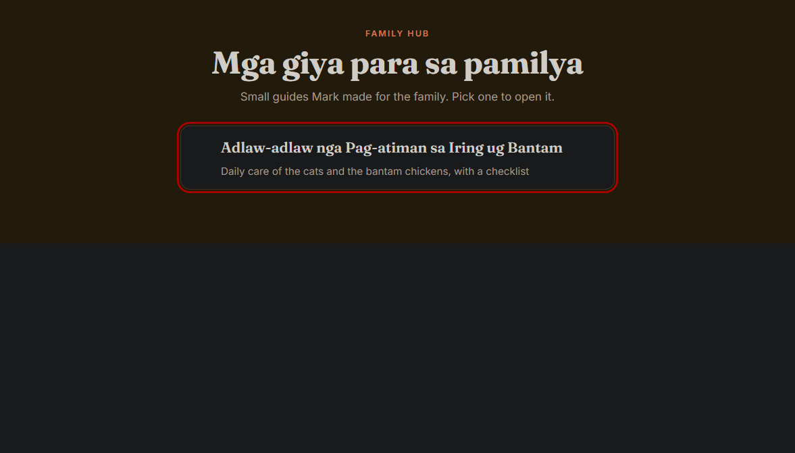
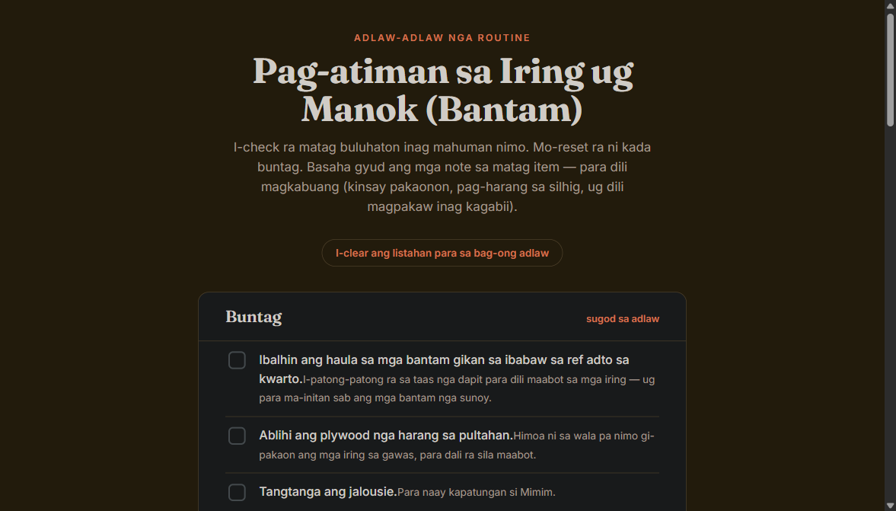

Path map: P1 open / ; P2 choose the guide card, land on the checklist. Served locally from the commit (python http.server), Chrome, Dark Reader on in that profile.


Stylelint: a planted a{color:#fff} was refused by trunk check; tokens.css, home.css and page.css pass.